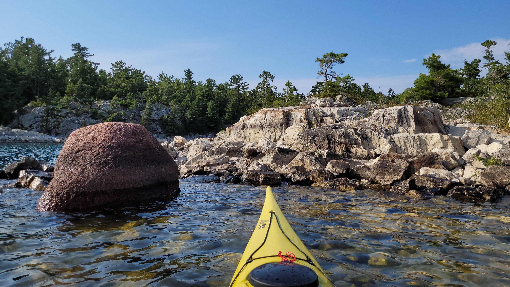
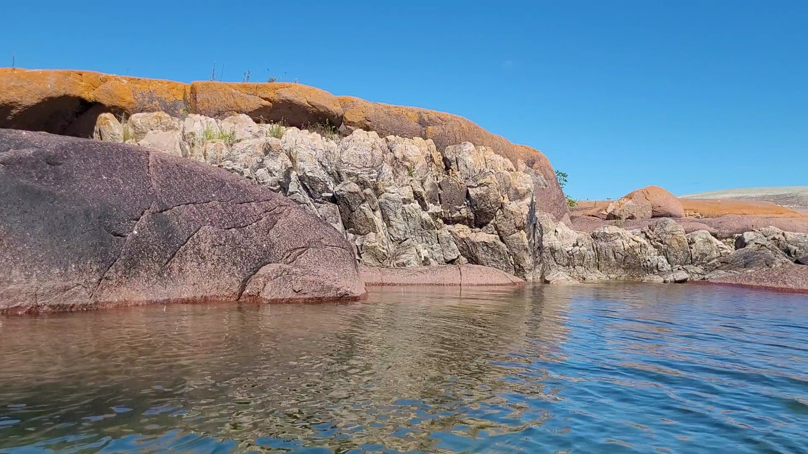
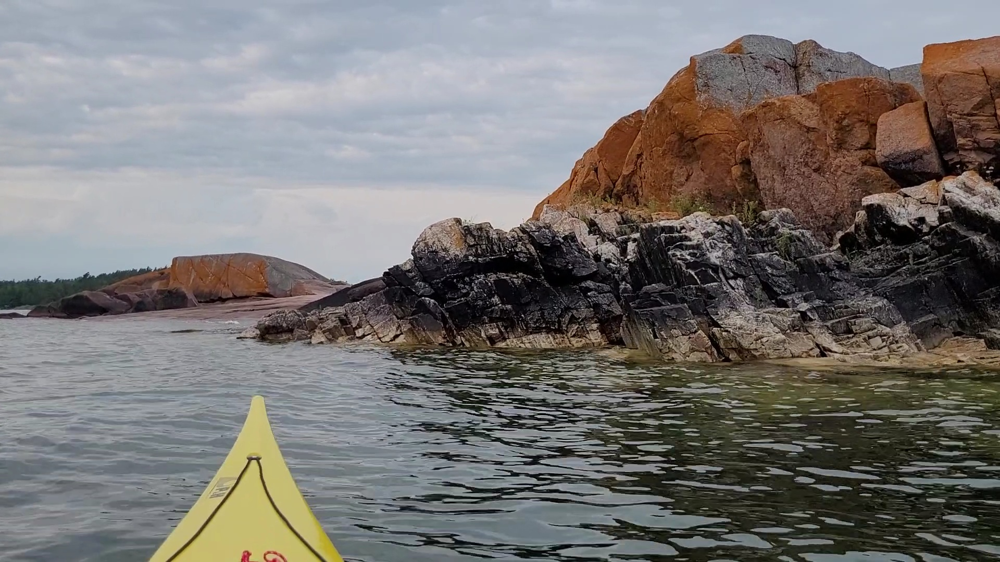
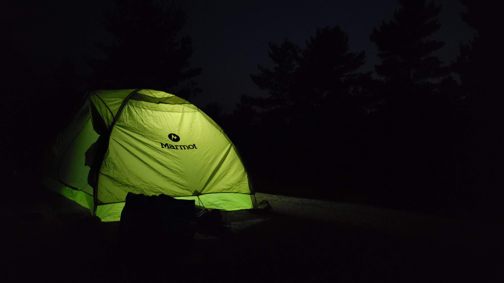
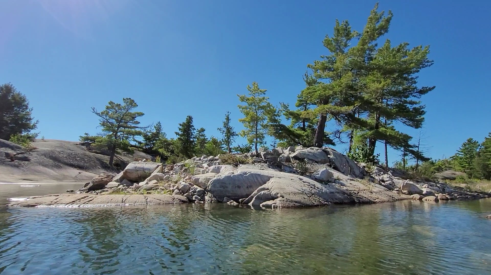
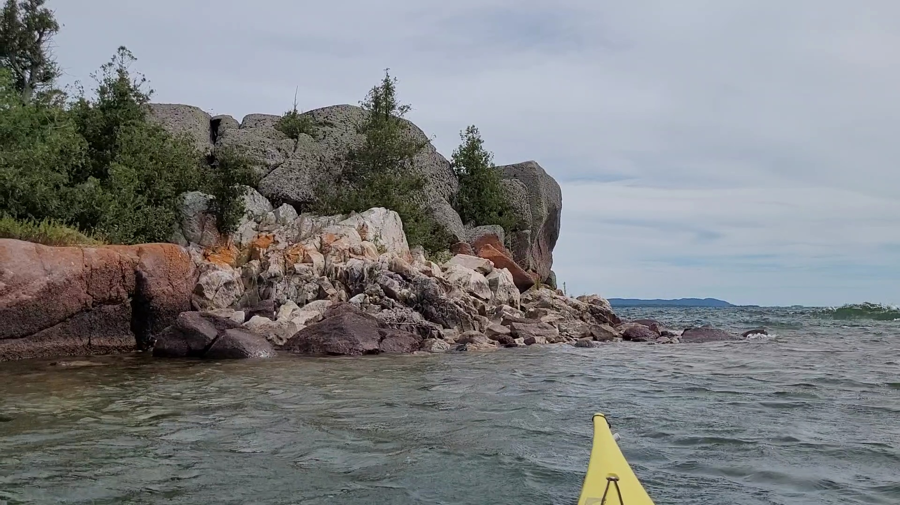
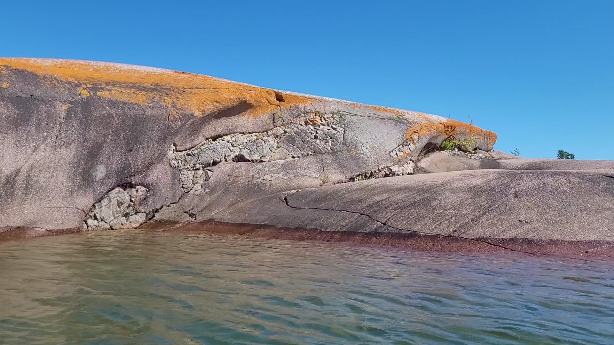

Benjamin Islands
August 2025




"From McBean harbor I launched away, to the Benjamin Islands where I would stay."


"Along lake Huron where islands lie, towards the meeting of both sea and sky."


"In my kayak, to a timeless place, through the North Channel's vast embrace."





"Around Fox Island is where I went, passing gnarly trees the wind had bent."





"For five long days I’d paddle and roam, finding new wonders far from home."



"Each stroke revealed some secret hue, in rocks the glaciers once carved through."